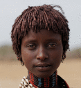
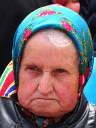
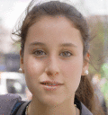
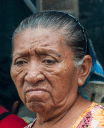

Image and ancillary data from the NPRportrait 0.1 Benchmark described in the paper below can be downloaded.
Note that version 1.0 is now available.
P.L. Rosin, D. Mould,, I. Berger, J. Collomosse, Y.K. Lai, C. Li, H. Li, A. Shamir, M. Wand, T. Wang, H. Winnemöller, "Benchmarking Non-Photorealistic Rendering of Portraits", Symp. on Non-Photorealistic Animation and Rendering, 2017.
New in 2023: Julian Bültemeier (Institute Industrial IT, Technische Hochschule Ostwestfalen-Lippe) has manually created segmentation masks for all the NPRportrait 0.1 Benchmark images using the following region categories: skin, clothing, eyeballs, nose, ears, hair, eyebrows, facial hair, lips, teeth, mouth cavity, accessories, headgear, glasses.
Thumbnails for the level 1 images from the above paper are shown below, and the (full resolution) set is zipped up for downloading here.
Thumbnails for the level 2 images from the above paper are shown below, and the (full resolution) set is zipped up for downloading here.




Individual images should be attributed to the original photographers. All images came from Flickr unless otherwise specified.
Photo credits for level 1:
1 Piratska strana,
2 IFES - International Fellowship of Evangelical Students,
3 Mecklenburg County,
4 Jesse Gross (Wikimedia),
5 iKobe!,
6 IFES - International Fellowship of Evangelical Students,
7 Pexels (pixabay),
8 Ethan M Sigmon,
9 IFES - International Fellowship of Evangelical Students,
10 projectofheart,
11 Oregon Department of Forestry,
12 Partij van de Arbeid,
13 Partij van de Arbeid,
14 chidi (pixabay),
15 SANGONeT ICT for NGOs Conference,
16 Mecklenburg County,
17 jaymarable,
18 IFES - International Fellowship of Evangelical Students,
19 Partij van de Arbeid,
20 Matthew Roth.
Photo credits for level 2:
1 Sgt. Matthew Callahan (Wikimedia),
2 BBC World Service,
3 Rod Waddington,
4 Adam McGuffie,
5 Pablo El Diablo,
6 www.j-pics.info,
7 susan,
8 Nando.uy,
9 Christopher Blizzard,
10 Adam Jones,
11 Christopher Thompson,
12 shankar s.,
13 ptksgc (pixabay),
14 Sparky,
15 Nando.uy,
16 Martin Sharman,
17 wiki The Photographer,
18 Greg Peverill-Conti,
19 Hamish Irvine,
20 Greg Peverill-Conti.